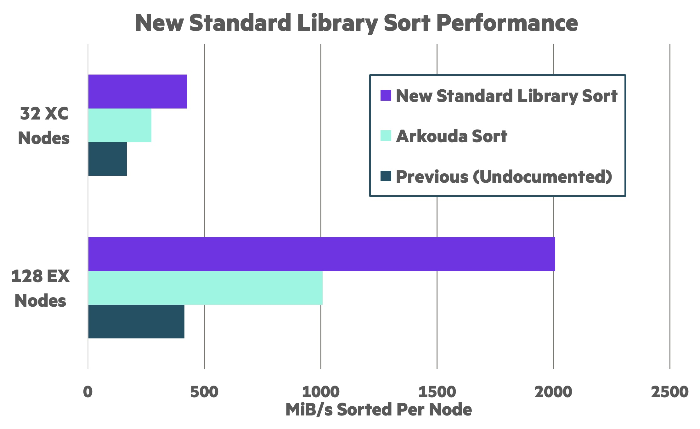
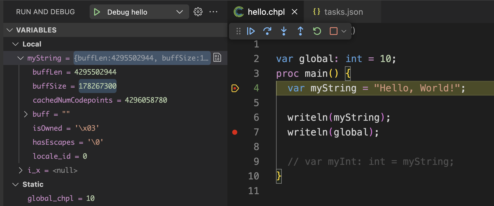
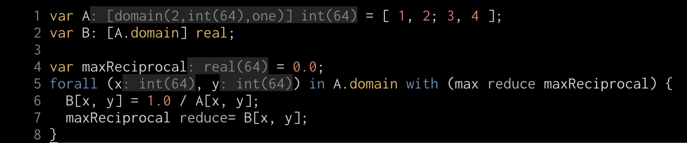
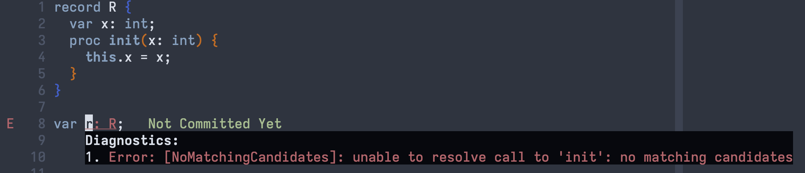
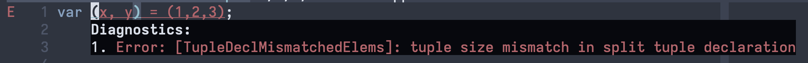

The Chapel community is excited to announce the release of Chapel 2.5! As always, you can download and install it in a [note:Note that some formats may not be immediately available on the day of the release…], including Spack, Docker, Homebrew, various Linux package managers, and good old source tarballs.
In this article, we’ll introduce some of the highlights of Chapel 2.5, including:
-
A new distributed sort algorithm that outperforms and outscales previous sorts in Chapel
-
A new concept of editions to support experimental and potentially breaking features
-
A new version of the
reshape()procedure that supports aliasing of local arrays -
Initial support for debugging Chapel programs using VS Code
-
Improvements to the capabilities and performance of the Dyno front-end
In addition to the above features, which are covered in more detail in the sections below, other highlights of Chapel 2.5 include:
-
Initial support for dynamically loading libraries and calling into them
-
Additional improvements to Chapel’s support for Python interoperability
-
A new technical note on performance tuning of Chapel programs
-
A new option to use mimalloc as the memory allocator for executables or the compiler itself
For a much more complete list of changes in Chapel 2.5, see the CHANGES.md file. And huge thanks to everyone who contributed to version 2.5!
Distributed Sorting
Chapel 2.5 includes a new implementation of scalable distributed
sorting. This implementation supports comparison- and radix-sorting
of Block-distributed arrays, and it can be called from the standard
library sort() procedure. When sorting random integers on 128
nodes of HPE Cray EX, the new implementation is ~5x faster than the
previous (undocumented) distributed radix sort in the standard
library, and ~2x faster than the radix sort used in
Arkouda to implement its GroupBy
operations.

A performance comparison between the new sort implementation, Arkouda’s custom sort, and the previous (undocumented) distributed sort.
To make use of this new sort implementation, simply pass a
Block-distributed array to Chapel’s standard
sort() procedure.
Chapel Editions
The Chapel 2.0 release represented a promise that we wouldn’t make breaking changes to the language willy-nilly. But there are still breaking changes we will need to make, both to improve upon existing features, and to address future requests from users. With that in mind, Chapel 2.5 includes a new editions feature that takes its inspiration from Rust.
Chapel’s editions provide a known stable version of the language via
the default 2.0 edition. They also provide a place for trying out
proposed changes via a new [note:Note that
in the 2.6 release this edition will be named “preview” instead. This was a
name that occurred to us after the release or it would have been the name for
2.5. Sorry for the churn!]. Users will get the 2.0
edition by default; or they can explicitly request it by compiling
with the new edition flag, using
--edition=2.0. Meanwhile, users
who want to experiment with anticipated breaking changes can compile
with --edition=pre-edition, though we do not recommend
distributing production code with this setting.
As of Chapel 2.5, the pre-edition only contains a revision to the
reshape() procedure, as described in the next section. Going
forward, we intend to add other breaking changes to the pre-edition
as they come up. Once we have accumulated enough changes—and have
enough experience with them—we will make a new official edition that
bundles those changes. Please continue to make suggestions on how
to improve the language via Github
issues or one of our
various communication
platforms.
For more information on editions in Chapel, please refer to their technical note.
Aliasing Array Reshaping
Though Chapel has long supported the ability to reshape an array from one rank and/or shape to another, this has always been done by copying the array’s elements. Thus, if a user were to write:
|
|
the assignment to B2D wouldn’t change the values of A’s
elements, since B2D would have its own copies of them.
Users have long requested the ability to have a reshape procedure that results in an alias to the original array’s elements rather than a copy. In Chapel 2.5, we have added support for this feature, making it part of the pre-edition mentioned above, due to it being a breaking change relative to Chapel 2.0.
In order to get an aliasing reshape, it is crucial that the result
of the reshape be captured in a ref declaration or passed to a
ref argument. For example, rewriting the previous example as
follows and compiling with --edition=pre-edition demonstrates that
the original array A has been modified through the assignment to
A2D:
Note that, at present, alias-based reshaping is only supported for
local arrays since it isn’t obvious that aliasing reshapes make
sense for distributed array types. To reshape a distributed array,
an optional copy=true argument can be provided to opt back in to
the copy-based behavior that Chapel has traditionally provided.
This new version of reshape() also has some quality-of-life
improvements, such as:
-
permitting the new shape to be specified as a list of ranges (e.g.,
reshape(A, 1..2, 1..2)), -
inferring the upper bound when reshaping to a 1D array (e.g.,
reshape(A, 1..)), and -
flagging likely mistakes when dimensions are fragmented or combined in surprising ways.
For details, refer to the online
documentation
for reshape().
Improved Debugging
Chapel 2.5 includes significant improvements to debugging support, making it easier to identify and resolve issues in your code. Historically, Chapel has had limited debugging capabilities, which has been a barrier for many users, especially those accustomed to more robust debugging tools in other languages.
This release addresses some of these challenges by expanding the Chapel VS Code extension to better support shared-memory debugging. This makes it much easier to visually debug Chapel programs.

A screenshot of debugging Chapel from within VS Code
The limited debugging support that Chapel has traditionally had has been geared toward the compiler’s C back end. This usually meant debugging Chapel code in terms of C code and C variables, which is cumbersome.
In an ideal world, Chapel variables and structures would be directly accessible in a debugger without any use or knowledge of C. This release moves Chapel towards this vision by having the compiler generate better debug information when using the default LLVM back end. Although further improvements are still needed, Chapel 2.5 represents a tangible improvement on the road to a more seamless debugging experience in Chapel.
To learn more about these improvements, see the new Debugging in VS Code section in the editor documentation.
Improvements to the Dyno Compiler Front End
As you may have seen in previous release announcements, Dyno is the name of a project whose aim is to modernize and improve the Chapel compiler. Dyno improves error messages, allows incremental type resolution, and enables the development of language tooling. Among the major wins for this ongoing effort is the Chapel Language Server (CLS), which was previously featured in a blog post about editor integration. Our team has been hard at work implementing many features of Chapel’s type system in Dyno, which—among other things—will enable tools like CLS to provide more accurate and helpful information to users.
More Language Features
This release has seen additional support for language features come online with Dyno, where some notable examples include:
reduce=expressions- array indexing and slicing
- n-dimensional array literals
- de-tupling loop indices
The following screenshot shows an editing session in which Dyno-inferred type information is rendered in-line within the following, mostly untyped, code example.
reduce-index-nd.chpl
|
|

Dyno displaying inferred type information for n-dimensional arrays, reduce=, and tuples
Generating Executable Code
This release also includes experimental support for using Dyno to generate
executable code, which is a major step toward Dyno’s goal of replacing
the front end of the production compiler. This is an ongoing process that involves taking
the information that Dyno has about the program and generating AST for
the production compiler, essentially skipping over its
type resolution and analysis phases. This capability is enabled using the
--dyno command-line flag.
Initial support is limited to a subset of Chapel’s language
features, but will grow over time. Here is a simple example program
that Dyno can now compile, demonstrating the use of extern blocks
and the c_ptr type:
|
|
Dyno can also compile additional features into executables, including enums, select-statements, and others. Stay tuned as we continue to add support for more features!
Improvements to Compile Times
In addition to improving Dyno’s resolver and converter, a lot of effort has been dedicated in this release to Dyno’s performance. Using algorithmic improvements, better data structures, and strategic caching, the team was able to reduce the time it takes Dyno to resolve programs by as much as 5x in some cases. Though Dyno has not yet achieved full support for all Chapel features, our recent experiments put it ahead of the production compiler in terms of resolution speed:
| Time (Dyno ~2.4) | Time (Production) | Time (Dyno 2.5) | Speedup | |
|---|---|---|---|---|
| Motivating code | 9.7 s | 2.364 s ± 0.020 s | 1.968 s ± 0.052 s | 1.22 ± 0.01 |
parIters.chpl |
- | 2.181 s ± 0.027 s | 1.918 s ± 0.041 s | 1.14 ± 0.03 |
atomics.chpl |
- | 2.148 s ± 0.022 s | 1.888 s ± 0.040 s | 1.14 ± 0.03 |
forallLoops.chpl |
- | 2.209 s ± 0.037 s | 1.936 s ± 0.034 s | 1.14 ± 0.03 |
(Click to see the motivating example program)
use BlockDist;
proc test() {
var D = {1..10, 1..10};
var b = new blockDist(D);
}
test();
Since Dyno powers the Chapel Language Server (CLS), these performance improvements will be reflected in the form of faster diagnostics and type-based hints in any editor that uses the Language Server Protocol – including VS Code. Coincidentally, since Dyno’s stability has improved since the initial release of resolver-based LSP features, in Chapel 2.5 we’ve enabled resolution-based diagnostics in CLS. Not only will you have more information in your editor, but you’ll also have it faster than before.

Dyno reporting ’no matching candidates’ for default-initialization in Neovim

Dyno reporting ’tuple split mismatch’ in Neovim
This short summary doesn’t begin to cover [note:Over 46 PRs have been merged as part of the Dyno project since the last release.] since version 2.4. With each release, Dyno draws nearer to feature parity with the production compiler.
For More Information
If you have questions about Chapel 2.5 or any of its new features, please reach out on Chapel’s Discord channel, Discourse group, or one of our other community forums. In addition, we’re always interested in hearing about how we can make the Chapel language, libraries, implementation, and tools more useful to you.
Updates to this article
| Date | Change |
|---|---|
| Jul 14, 2025 | Added a note indicating the renaming of pre-edition to preview |